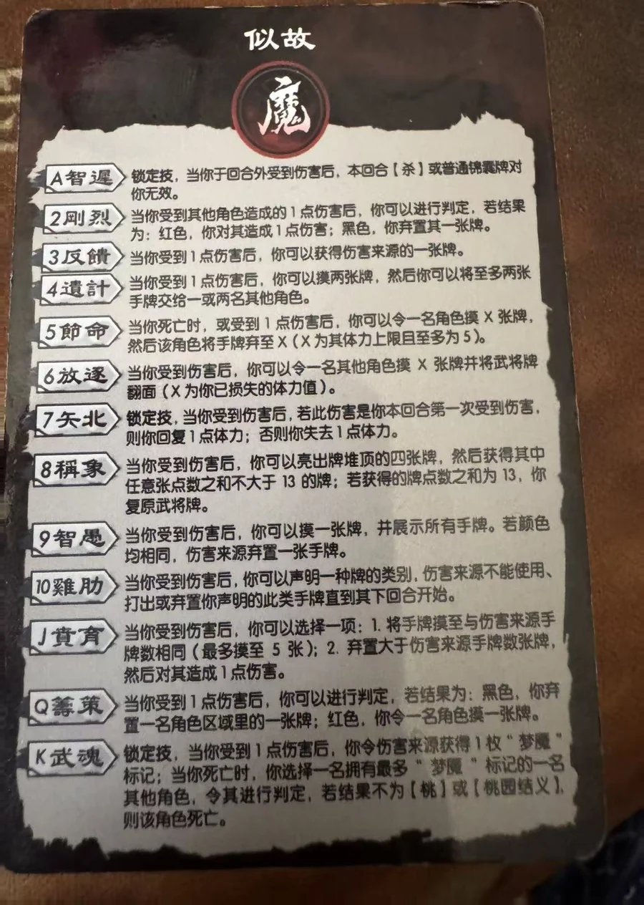

点击卡面查看大图
魏
魔曹操·似故
— 技能卡一目窥九州
A 智迟锁定技衍生
锁定技，当你于回合外受到伤害后，本回合【杀】或普通锦囊牌对你无效。
2 刚烈衍生
当你受到其他角色造成的1点伤害后，你可以进行判定，若结果为：红色，你对其造成1点伤害；黑色，你弃置其一张牌。
3 反馈衍生
当你受到1点伤害后，你可以获得伤害来源的一张牌。
4 遗计衍生
当你受到1点伤害后，你可以摸两张牌，然后你可以将至多两张手牌交给一或两名其他角色。
5 节命衍生
当你死亡时，或受到1点伤害后，你可以令一名角色摸X张牌，然后该角色将手牌弃至X（X为其体力上限且至多为5）。
6 放逐衍生
当你受到伤害后，你可以令一名其他角色摸X张牌并将武将牌翻面（X为你已损失的体力值）。
7 矢北锁定技衍生
锁定技，当你受到伤害后，若此伤害是你本回合第一次受到伤害，则你回复1点体力；否则你失去1点体力。
8 称象衍生
当你受到伤害后，你可以亮出牌堆顶的四张牌，然后获得其中任意张点数之和不大于13的牌；若获得的牌点数之和为13，你复原武将牌。
9 智愚衍生
当你受到伤害后，你可以摸一张牌，并展示所有手牌。若颜色均相同，伤害来源弃置一张手牌。
10 鸡肋衍生
当你受到伤害后，你可以声明一种牌的类别，伤害来源不能使用、打出或弃置你声明的此类手牌直到其下回合开始。
J 贲育衍生
当你受到伤害后，你可以选择一项：1.将手牌摸至与伤害来源手牌数相同（最多摸至5张）；2.弃置大于伤害来源手牌数张牌，然后对其造成1点伤害。
Q 筹策衍生
当你受到1点伤害后，你可以进行判定，若结果为：黑色，你弃置一名角色区域里的一张牌；红色，你令一名角色摸一张牌。
K 武魂锁定技衍生
锁定技，当你受到1点伤害后，你令伤害来源获得1枚“梦魇”标记；当你死亡时，你选择一名拥有最多“梦魇”标记的一名其他角色，令其进行判定，若结果不为【桃】或【桃园结义】，则该角色死亡。